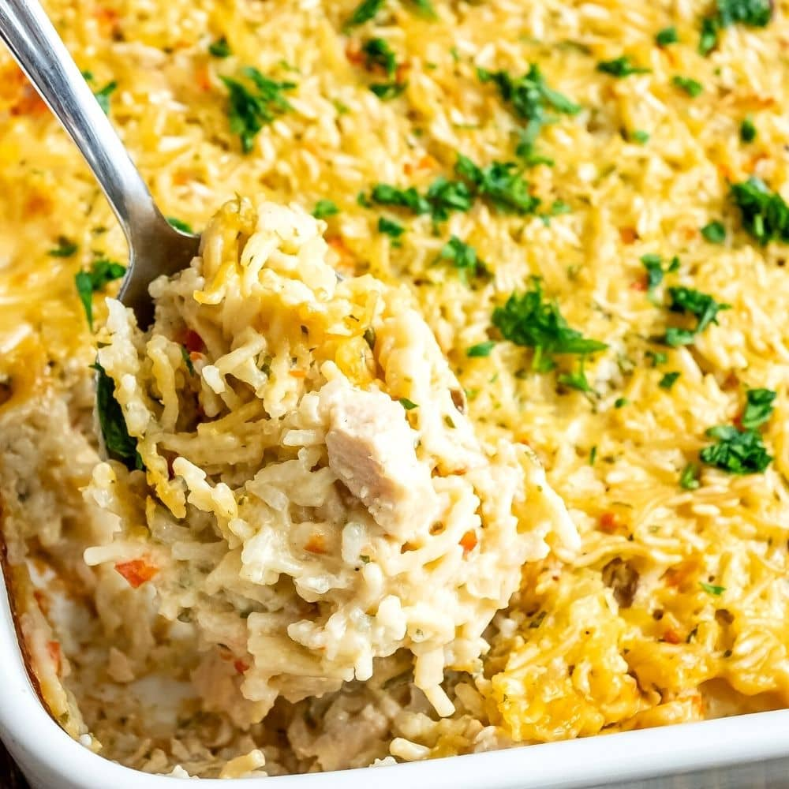

back
Chicken Rice Casserole

Description
I grew up with this chicken and rice casserole recipe. My Grandmother got
it from a lady from church at a pot luck a long time ago! She passed it
down to my mom and it's always been a family favorite. Quick and easy for
school nights, and the leftovers are just as good! You can use less butter
on top of course, my Momma and Mamaw always put the full stick on top
(gotta love Southern ladies and their butter!)
Ingredients
- 3 chicken breasts, cut into cubes
- 2 cups water
- 2 cups instant white rice
- 1 (10.75 ounce) can cream of chicken soup
- 1 (10.75 ounce) can cream of celery soup
- 1 (10.75 ounce) can cream of mushroom soup
- salt and ground black pepper to taste
- ½ cup butter, sliced into pats
Steps
-
Preheat oven to 400 degrees F (200 degrees C). Grease sides and bottom
of a casserole dish.
-
Stir chicken, water, rice, cream of chicken soup, cream of celery soup,
and cream of mushroom soup together in the prepared casserole dish;
season with salt and pepper. Arrange butter evenly over the top of the
chicken mixture.
-
Bake in preheated oven until the rice is tender and the chicken is
cooked through, 1 hour to 75 minutes. Cool 10 to 15 minutes before
serving.